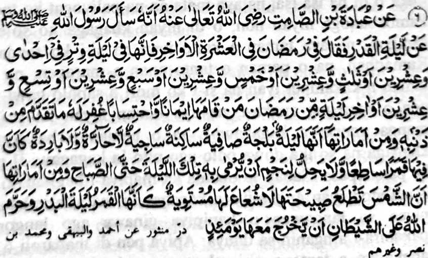

Hadith 6

Miyakathitayan ko 'Ubaadah bin Saamit (Radhiallaho ‘Anha) a mata-an a sekaniyan na iniza-an niyan so Rasulollah (Sallallaho ‘Alaihi Wasallam) makapantag ko Lailatul Qadr na miyatharo iyan: “Madadalem ko Ramadhan ko mori a sapolo gawi-i go manga gansar a kagagawi-i pho-on ko ika dowa polo ago isa, go ika dowa polo ago telo, go ika dowa polo ago lima, go ika dowa polo ago pito, go ika dowa polo ago siyaw, o di na si-i ko mori a kagagawi-i ko Ramadhan. Sa tao a itindeg iyan [non so simba] sa paratiyaya niyan ago arap iyan ko balas [o Allah (Subhaanaho Wa Ta'ala)] na rila-an rekaniyan so miya-ona a manga dosa niyan. Go ped ko manga tanda iyan na mata-an a sekaniyan a kagagawi-i na lomilintad, a lomelengen, go masindao a kagagawi-i, a di peman matenggao, na di peman mayaw ka thatangka-i sa lagid, o mamomotayag so olan, go da a kha-olog a apoy [a iphelebad ko manga Shaitan] sangkoto a kagagawi-i; sa tatap den angka-i [a betad] taman ko kasebang o Fajr. Ped a tanda iyan na si-i ko kazebang o alongan, na so alongan na somebang sa kena ba tanto masindao sa lagid o mimbiring a olan. Sangka-iya a gawi-i na isapar o Allah (Subhaanaho Wa Ta'ala) ko Shaitan o ba rengan ko kapezebang o alongan. ”
OSAYAN
Ped ko miya-aloy sangkanan a Hadith na miya-osay tano den. Saba-ad ko manga tanda na inaloy si-i pantag sangkoto a titho a kagagawi-i. Giyangka-iya manga tanda na tanto a marayag sa di den patot so kaosaya kiran. Liyo sangka-i, na madakel a salakao a manga tanda a miyanga-aaloy ko manga ped a Hadith o di na si-i ko kiyasagadi ron o siran a miyamagontong a miya-atod iran so Lailatul Qadr. Aya tanda a tanto a miyapento sangkanan a Hadith na giyangkoto a kazebang o alongan, a kena ba tanto masindao. So manga ped a tanda na kena ba lalayon. Isa a Sahabi, so Ab’da bin Abi Lubaaba (Radhiallaho ‘Anho) na pitharo iyan: “Si-i ko kagagawi-i a ika dowa polo ago pito, na tiya-aman aken so ig ko ragat na mapiya-i ta-am (kena ba matimos).” So Ayub bin Khalid (Rahmatullahi Alaihi) na miyatharo iyan: “Miyaka-isa na miyakaphaigo ako sa ragat na so kiyata-ami aken non na aya ta-am iyan na mamis. Giya-i na si-i ko ika dowa polo ago telo a kagagawi-i.” Saba-ad ko manga Masha-ikh [manga paloke-lokesan ko Agama] na pitharo iran a si-i ko kagagawi-i a Lailatul Qadr, na so langon o nganin na pezodod ko Allah (Subhaanaho Wa Ta’ala), taman sa so manga kayo na pekhadempas ko lopa, na oriyan niyan na komasoy siran bo ko betad iran; ogaid na giyangka-i a gi-i manggola-ola a aya bo a pephaka-ilay ron na so manga poporo-i simba sa di khailay o kalilid a tao.